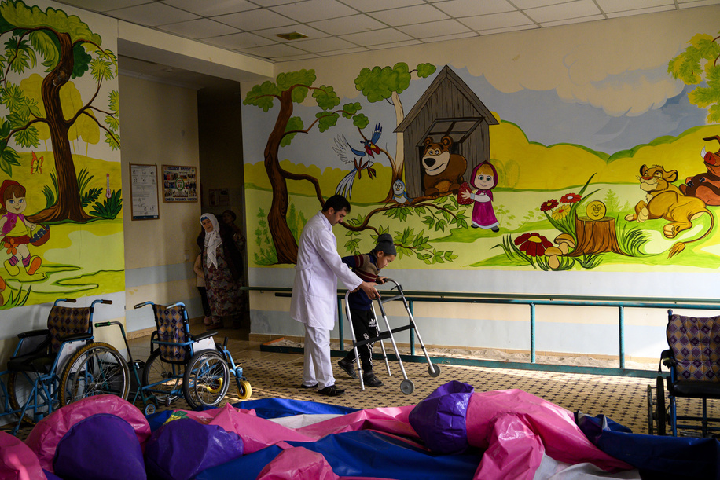

Although experts are still learning a lot about the COVID-19 vaccines, there are some clear benefits to getting vaccinated.
If you’ve already received the vaccine, great job! Share these facts with others who might be hesitant. If you’re unsure whether the vaccine is right for you, consider these four benefits the vaccine could provide you and your loved ones.
Once you receive your first shot, your body begins producing antibodies to the coronavirus. These antibodies help your immune system fight the virus if you happen to be exposed, so it reduces your chance of getting the disease. There are three vaccines available for use in the United States, and they are all effective in preventing infection.
It’s true that you can still become infected after being vaccinated, but once more of the population is vaccinated, those chances are further reduced thanks to something called. So getting vaccinated not only reduces your chance of being infected, it also contributes to community protection, reducing the likelihood of virus transmission.
Studies have found that expectant mothers who receive the COVID-19 vaccine create antibodies to the virus and pass those to their unborn baby through the placenta. Mothers were also shown to pass antibodies to their newborns through breast milk. This suggests those newborns have some immunity to the virus, which is especially important as young children cannot get the vaccine. Learn more about
During studies, the three vaccines — Johnson & Johnson, Moderna and Pfizer — have shown to be effective at preventing severe illness from COVID-19. So if you are vaccinated and become infected, you are very unlikely to become severely ill.
The CDC tracks confirmed COVID-19 hospitalizations by vaccination status. For adults 18 and older, unvaccinated people were eight times more likely to be hospitalized than fully vaccinated people. Among adolescents between ages 12-17, unvaccinated people are 10 times more likely to be hospitalized than fully vaccinated people.